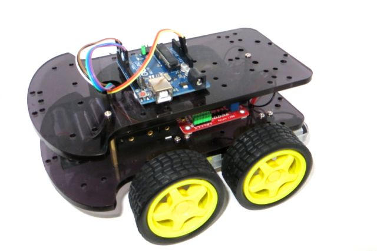
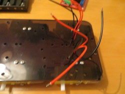

The kit should have all of the components shown. The Blue Board is the Arduino - brains of the robot. The Red Board is the Motor Control board. There are two platforms - the bottom one will have motors attached. There are 4 wheels. You should have a USB cable, battery box, 3 posts, a number of screws and nuts and at least 16 sticky pads.
Please check that all parts are present before starting to assemble the robot.
There will be additional screws – please save them for later projects.
Remove all the packaging.
Tools You'll Need
A small flat bladed screwdriver - jewelers size.
A computer with a USB port and internet connection.
6 x AA batteries
Step 1 - Preparing the Chassis
In this step we will be routing the motor cables through the chassis.
Collect up the cables from one side and bunch them together. You should find that there are 2 black cables and 2 red cables on each side.
Then Push them through these holes in the picture.
Completing Step 1

Turn the motor board upside down, and stick 5 of the sticky pads to the bottom of it.
Remove the backing and stick down where shown
The blue parts with screws are called terminals. We will be connecting the motors to these. First loosen all the screws in the terminals - only a little - don't completely unscrew them.
Now collect up the red cables on the left hand side. Twist the metal ends together. Push the red cables into the "motor B" inside terminal.
Screw down the terminal. Repeat - bunch, twist, insert and screw down for the black cables on the left side.
Stick on pads, and peel off the backing.
Stick the battery box onto the chassis
It should be at the front, in the middle of the chassis as shown.
Ensure that the cables are on the robots right hand.
Screw in the cables
|
The red cable from the batteries should be screwed into the terminal marked "VMS" |
||
|
The black cable should
be screwed into the
terminal “GND” |
||
| Tidy up the motor cables | ||
|
Push a sticky
pad down on the
right hand of
control board. |
||
|
Remove the
backing |
||
|
Stick the cables
onto it. |